まいにちピアノ見本をさわる
まいにちピアノ見本をさわるレッスンの「おだい」が、
おうちの毎日の練習になる。
子どもがピアノを弾くたびに、アプリの中の主人公が「おとの くに」を1歩ずつ進みます。先生は、予定・振替・連絡帳・月謝の記録まで、ひとつの画面で。
- カードの登録なし
- アプリのインストールなし
- LINEの設定なしで始められる
- ご家庭の負担なし
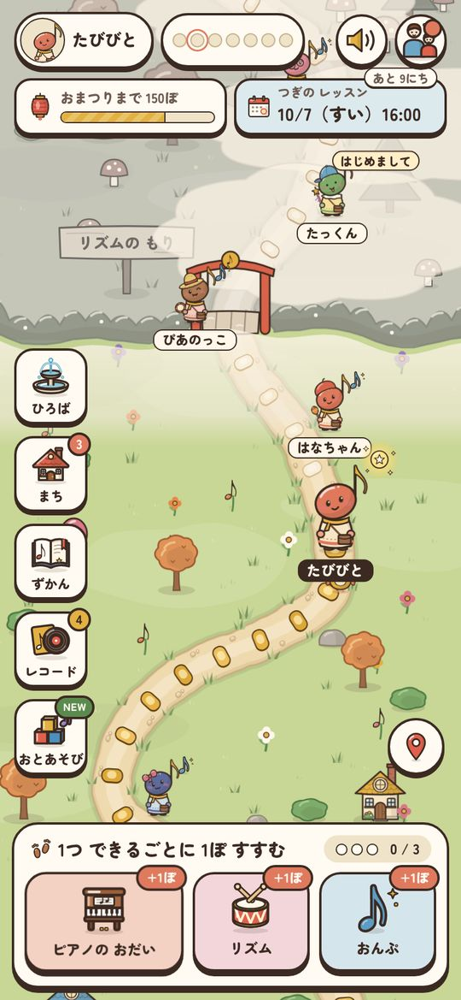
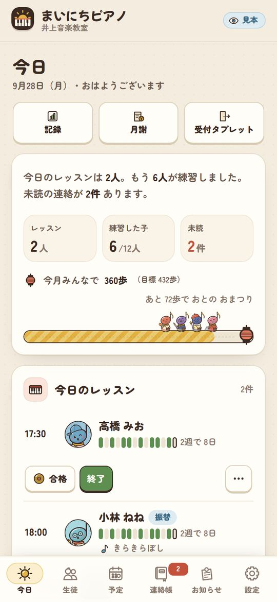
「練習してきてくれない」は、多くの先生の悩みです。
「満足のいく練習をしてくる生徒は何割ぐらいですか？」という問いに、7割以上と答えた先生の割合です（ほぼ100%：2.6%、70%以上：25%）。残りの7割あまりの先生は、それより少ないと答えています。
まいにちピアノは、レッスンとレッスンのあいだの6日間を、
先生の「おだい」でつなぐためのアプリです。
先生が出して、子どもが弾いて、先生が見る。
いま練習している曲と、5指ポジションなどの練習の2つ。曲名を入れるだけで始められます。ワークやハノンなど、教室ごとの宿題も「毎日」「レッスンまでに○回」で出せます。
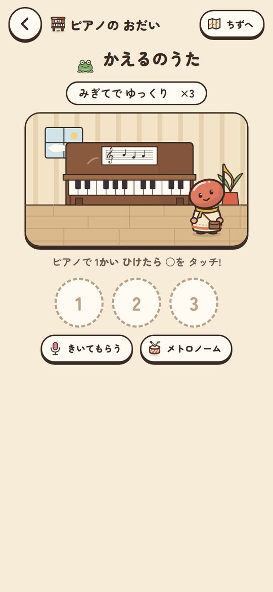
本物のピアノで1回弾くごとに○をタッチ。リズムとおんぷは50段階で、その子のペースで進みます。
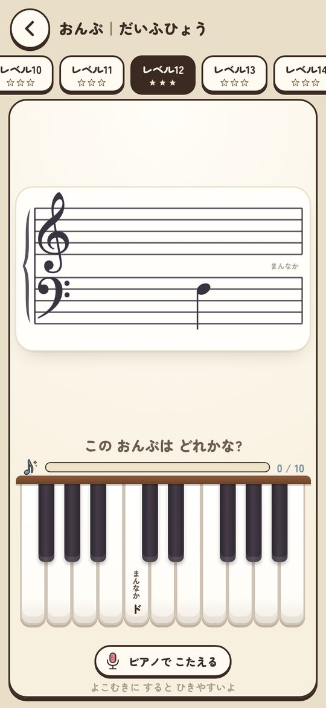
週ごとに、1人あたり何日ピアノに向かったかが棒グラフで出ます。レッスンの前に、その子の2週間の様子もわかります。
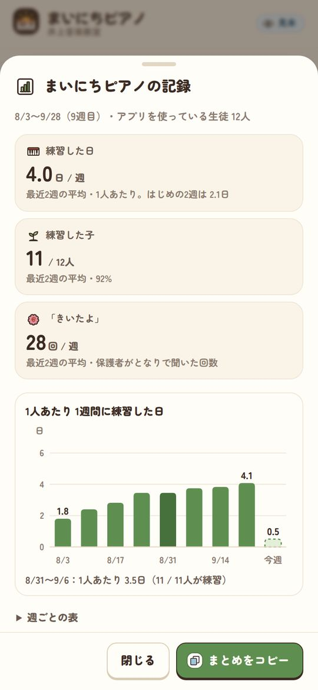
毎日ひらきたくなる「おとの くに」。
じぶんで作った主人公が、練習するたびに道を進みます。友だちのおうちに遊びに行ったり、合格した曲がレコードになって積み上がったり。
- 1日に進めるのは3歩まで。まとめてやるより、毎日少しずつのほうが進めるようにしています。
- 順位はつけません。地図に出るのはニックネームと歩数だけで、出さない設定もできます。
- あそびは練習のあと。その日の練習を1つしてから開き、1日に遊べる時間は保護者の方が決められます。
- 休んだ子を置いていきません。しばらく空いた子には「おいかぜ」が吹いて、追いつきやすくなります。
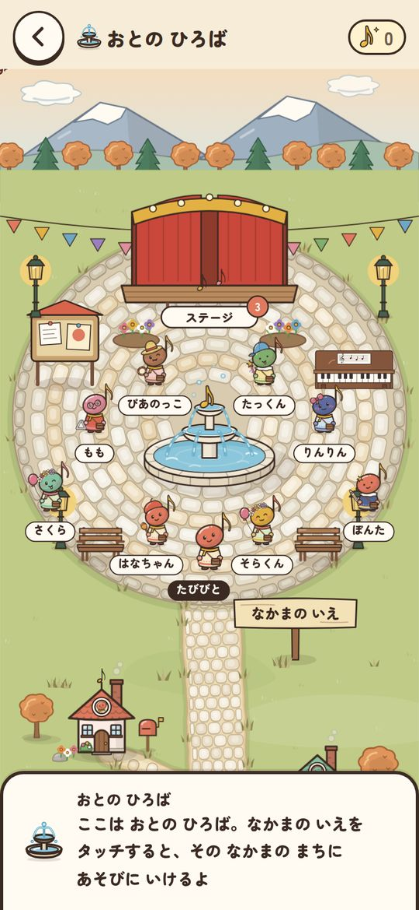
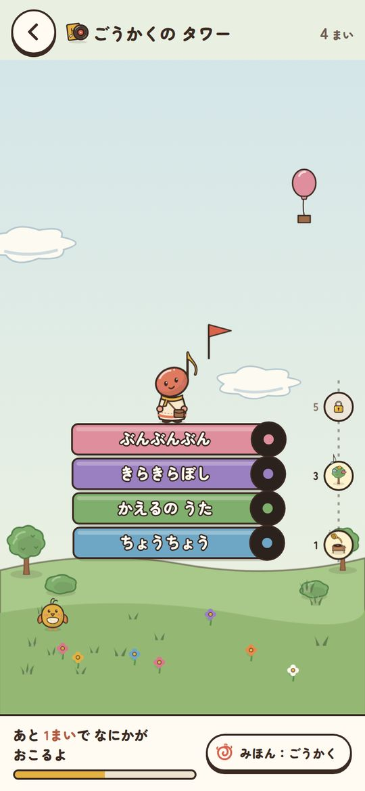
教室の事務も、ここでまとめて。
予定表づくり、振替のやりとり、月謝の確認。レッスンのあとの小さな事務を、アプリの中で終わらせます。
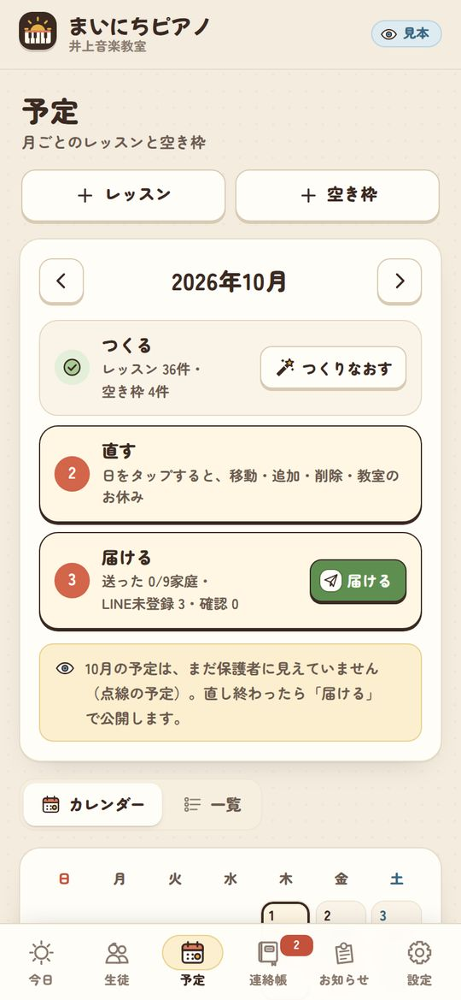
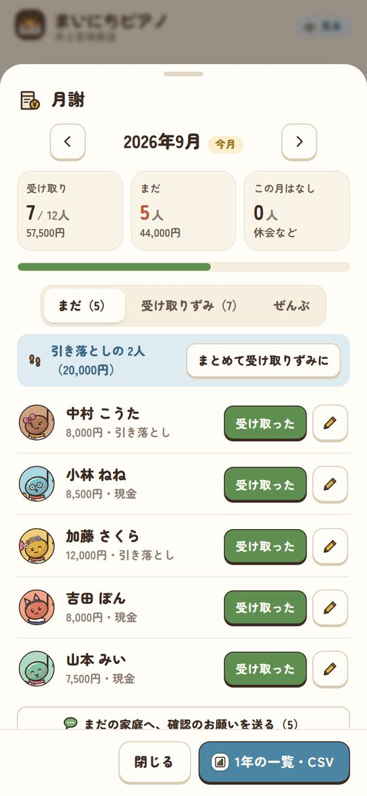
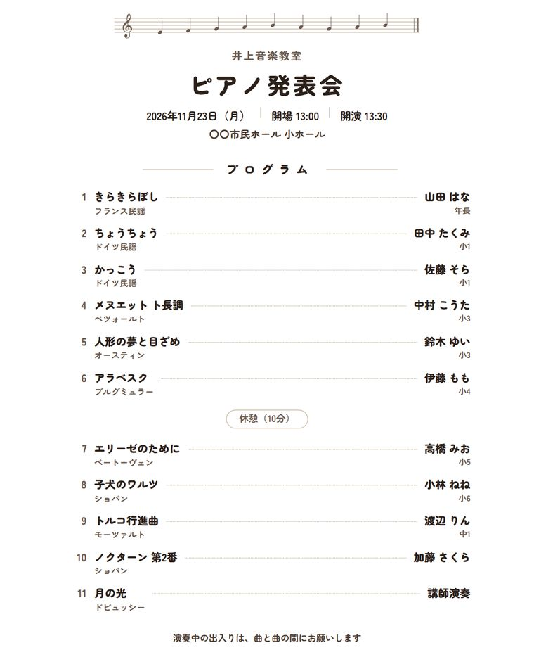
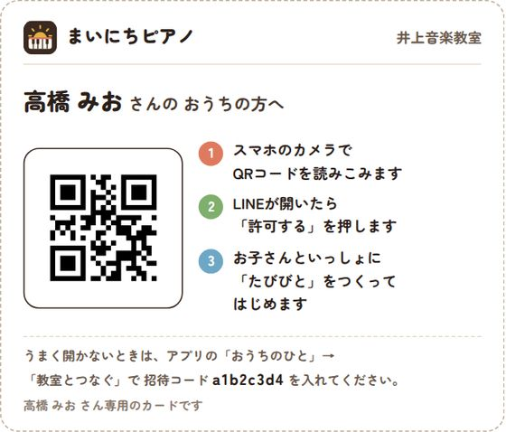
おうちの方は、となりで聞くだけ。
- 次のレッスンの日と、月の予定がすぐわかる
- 決まりの中なら、振替やお休みの連絡がその場ですむ
- レッスンノートで、先生からのひとことが届く
- 「きいたよ」を押すと、子どもの画面にはなまるが出る
- 月のがんばりと、あそびの時間が見える
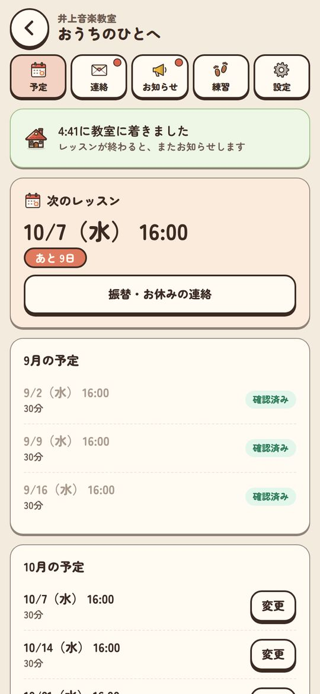
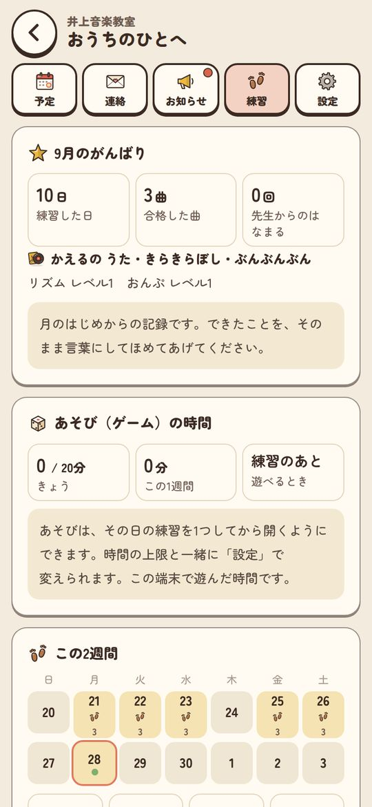
練習のための道具として。
アプリの中のあそびは、練習の準備運動という位置づけです。あそびでは主人公は進みません。
順位や点数のランキングはありません。くらべる相手は、きのうの自分です。
ニックネームと練習の記録が中心です。住所・電話番号・生年月日は集めません。くわしくはプライバシーポリシーへ。
練習を続けるための道具です。上達や結果を約束するものではありません。
生徒10人ごとに、月3,000円。ご家庭の負担はありません。
生徒さんの人数に合わせて、10人ずつ選べます。1人あたり月300円です。
税込・初期費用なし。年払いは10か月分（2か月分おトク）。生徒さんが増えたら、先生の画面から10人ずつ増やせます。上限を少しこえても（5人まで）、そのまま使えます。100人をこえる教室はご相談ください。
カードの登録はいりません。すべての機能を、生徒さんと一緒に使ってみてください。
7日間はそのまま使えます。そのあとは「お休みモード」になり、見ることはできますが、保存やLINEの配信が止まります。データは消えません。
自動で更新され、次の更新から止められます。解約から90日はデータを残し、その間に名簿や月謝の記録をCSVで書き出せます。
| 来月の予定（1家庭1通） | 約30通 |
|---|---|
| レッスン前日のリマインド | 約90通 |
| お知らせ（月1回） | 約30通 |
| 先生への通知（新しい連絡があった回だけ） | 連絡の件数まで |
LINEの費用は教室の公式LINEの契約によります（無料プランは月200通まで）。保護者がボタンを押したときの返事と、アプリの中の連絡帳は数えません。LINEをつながなくても、予定・連絡帳・お知らせはアプリの中で届きます。
よくある質問
アプリのインストールは必要ですか？
いりません。スマホやタブレットのブラウザか、LINEの中で開けます。保護者の方には、先生の画面からコピーした案内文をLINEで送るか、QRコードつきの案内カードを手渡しします。
子どもが自分の端末（クロームブック・タブレット）で使えますか？
使えます。ブラウザで開いて招待コードを入れるだけで、保護者のスマホと同じ主人公・同じ記録で続きができます。横長の画面やキーボードにも合わせています。学校から配られた端末は、学校のきまりやフィルタで使えないことがあるので、ご家庭で学校に確かめていただくよう案内しています。
LINE公式アカウントがなくても使えますか？
使えます。予定・連絡帳・お知らせは、アプリの中で届きます。予定の案内や前日のリマインドをLINEにも送りたいときだけ、教室のLINE公式アカウントをつなぎます。あとからつないでも大丈夫です。
始めるまでに、どんな準備がいりますか？
生徒さんの名簿を表から貼りつけて登録し、保護者の方に案内を送り、おだいと来月の予定を入れる、の順です。先生の画面の「はじめの準備」に、いまどこまでできたかが出ます。
使ってみて変わったかどうかは、どう確かめますか？
先生の画面の「記録」で、週ごとに、1人あたりピアノに向かった日数、練習した子の人数、保護者の「きいたよ」の回数を見られます。使い始めて2週間ほどで、保護者の方に1分のアンケートも出ます（答えるかどうかは自由です）。
ゲームばかりになりませんか？
アプリの中のあそびは、その日の練習（ピアノのおだい・リズム・おんぷのどれか）を1つしてから開くようにしています。1日に遊べる時間は、保護者の方が10分・20分・30分から選べます（はじめは20分）。主人公が進むのは練習をしたときだけです。
高学年や大人の生徒にも使えますか？
生徒ごとに「ジュニア」「おとな」の落ちついた画面に切りかえられます。練習タイマー・先生の課題・曲の記録・メトロノーム・録音（端末の中だけに保存）が入っています。
月謝の記録は、だれが見られますか？
代表の先生だけです。講師の先生と保護者の方には見えません。「受け取りました」の連絡を送る設定にしたときは、その家庭の連絡帳にだけ届きます。
講師の先生や、ほかの会場があっても使えますか？
使えます。会場を分けて登録でき、講師の先生は受け持つ会場と担当の生徒さんだけを見られます。先生ごとのカレンダー（Googleカレンダー・iPhone・タイムツリー）にも予定を出せます。
子どもの個人情報はどこまで集めますか？
ニックネームと練習の記録が中心です。住所・電話番号・生年月日は集めません。顔写真は、教室が保護者の方の了解を得て登録したときだけ、先生の画面で見分けるために使います。くわしくはプライバシーポリシーをご覧ください。
教材の図は、どの教本に合わせていますか？
特定の教本ではなく、5指ポジション・I–V7–I・和音I〜VII・調の見つけかたなど、どの教本でも出てくる内容を、アプリのための絵と言葉で作っています。
運営：合同会社Lyric Flow（静岡市）